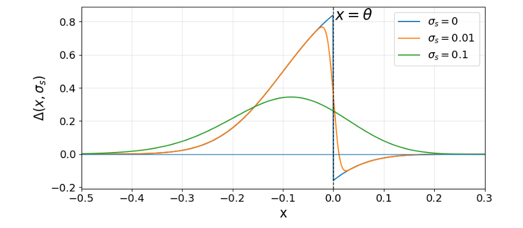
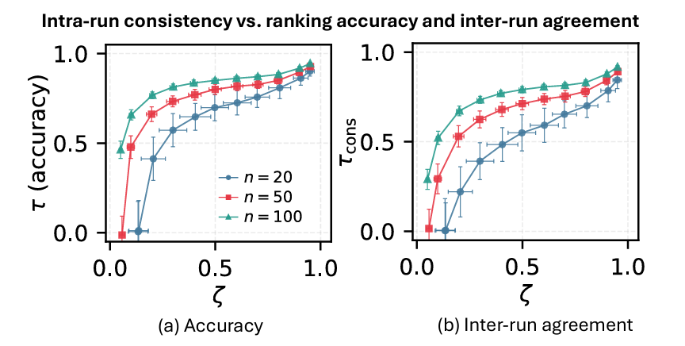
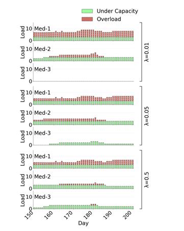
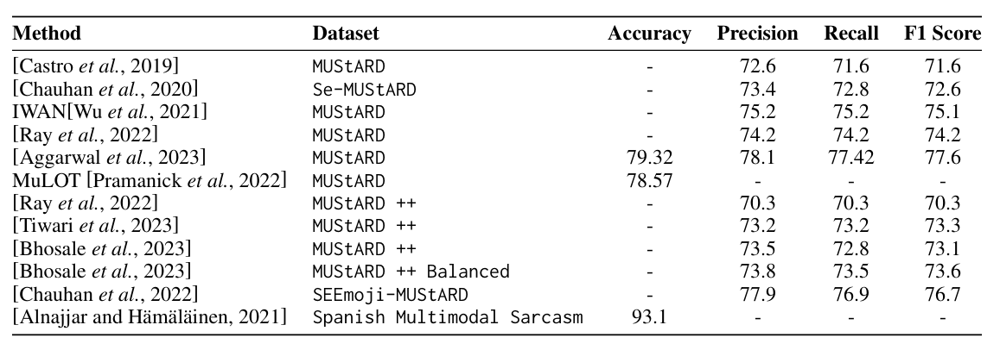
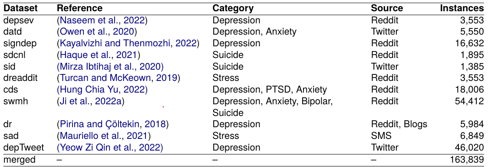
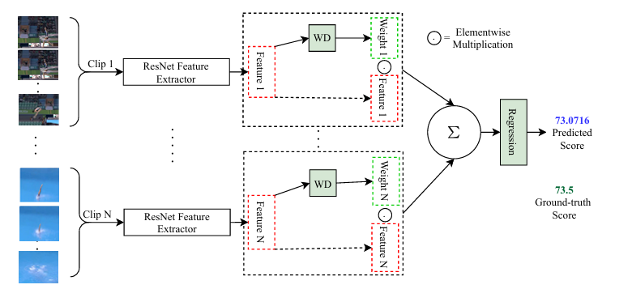

Research

Scarcity and Predictive Uncertainty: Implications for Societal Resource Allocation
An emerging literature examines the critical question of when and how prediction can be useful in allocating scarce societal resources. We examine a novel variant of this question: What happens when predictive uncertainty differs systematically across the population? This can occur in several situations; for example, when machine learning models have significantly different accuracies across different demographics. We show that this uncertainty has serious implications for resource allocation when coupled with commonly used binary measures of societal benefit from allocation. We formulate a novel mathematical model of scarce resource allocation that accounts for heterogeneous predictive uncertainties and analyze implications for both the allocation mechanism and the realized population-level benefits. We find that when resources are very scarce, maximum marginal benefit (MMB) prioritization favors individuals with lower predictive uncertainty even at the identical underlying initial state. However, we observe a flip in prioritization when resources are abundant, targeting higher-uncertainty individuals. We illustrate the implications of our results on the PISA educational testing dataset. Our findings have meaningful ramifications for the distributional outcomes of prioritization policies in many domains touched by the theory of local justice, including the allocation of public education resources, medical triage, and homelessness services. They also reveal a new moral dilemma in the ethics of scarce resource allocation - is it just to allocate a resource to one person over another solely based on predictive uncertainty about their futures? We also assess efficiency losses under both MMB and the vulnerability-first (VF) prioritization. Our model predicts efficiency losses across all resource levels, but particularly in low-resource settings.

Can LLMs Rank? A Tale of Triads and Triage
From housing allocation for households experiencing homelessness to triage in emergency departments, LLMs are increasingly being considered as judges of consequential decisions that require ranking people for scarce resources. Ranking large groups simultaneously is cognitively demanding and error-prone. A natural solution, drawing on decades of social choice theory, elicits pairwise comparisons and aggregates them into a total order. However, a fundamental question remains when LLMs serve as the pairwise judge: how can a practitioner tell, before committing to a ranking, whether the LLM's judgments are sufficiently consistent to trust the result? We discuss two different ways of identifying consistency. A classical diagnostic, the coefficient of consistency ζ, originally developed to measure judge reliability by counting circular triads in tournament graphs, provides a cheap, model-free measure of intra-run consistency. Various standard measures of distance between rankings, for example Kendall's τ, can measure inter-run variability. We show, in both theory and practice, that these measures are independently valuable, and advocate for using both to assess reliability of rankings. We demonstrate the practical importance of our results across two high-stakes prioritization tasks: homelessness service allocation and emergency department triage. Three different leading LLMs have considerably different performance profiles across these two axes of consistency. We provide guidelines for how practitioners could think about measuring and assessing consistency before committing to a model for ranking or prioritization.

SMaRT: Online Reusable Resource Assignment and an Application to Mediation in the Kenyan Judiciary
Motivated by the problem of assigning mediators to cases in the Kenyan judicial system, we study an online resource allocation problem where incoming tasks (cases) must be immediately assigned to available, capacity-constrained resources (mediators). The resources differ in their quality, which may need to be learned. In addition, resources can only be assigned to a subset of tasks that overlaps to varying degrees with the subset of tasks other resources can be assigned to. The objective is to maximize task completion while satisfying soft capacity constraints across all the resources. The scale of the real-world problem poses substantial challenges, since there are over 2000 mediators, and a multitude of combinations of geographic locations (87) and case types (12) that each mediator is qualified to work on. Together, these features—unknown quality of new resources (newly onboarded mediators), soft capacity constraints (due to the mandate to assign cases without delay), and high-dimensional state space—make existing scheduling and resource allocation algorithms either inapplicable or inefficient. We formalize the problem in a tractable manner, using a quadratic program formulation for assignment and a multi-agent bandit style framework for learning. We demonstrate the key properties and advantages of our new algorithm, SMaRT (Selecting Mediators that are Right for the Task), compared with baselines on some stylized instances of the mediator allocation problem. We then turn to considering its application to real-world data on cases and mediators from the Kenyan Judiciary. SMaRT outperforms baselines and allows for controlling the tradeoff between the strictness of the capacity constraints and overall case resolution rates, both in situations where mediator quality is known beforehand and when the problem is bandit-like in that learning is part of the problem definition. On the strength of these results, we plan to conduct a randomized controlled trial in which we deploy SMaRT in the Judiciary’s mediation management system.
Published at IJCAI 2026 World Bank Policy Research Working Paper 11456 Poster

Street-Level AI: Are Large Language Models Ready for Real-World Judgments?
A surge of recent work explores the ethical and societal implications of large-scale AI models that make “moral” judgments. Much of this literature focuses either on alignment with human judgments through various thought experiments or on the group fairness implications of AI judgments. However, the most immediate and likely use of AI is to help or fully replace the so-called street-level bureaucrats, the individuals deciding to allocate scarce social resources or approve benefits. There is a rich history underlying how principles of local justice determine how society decides on prioritization mechanisms in such domains. In this paper, we examine how well LLM judgments align with human judgments, as well as with socially and politically determined vulnerability scoring systems currently used in the domain of homelessness resource allocation. Crucially, we use real data on those needing services (maintaining strict confidentiality by only using local large models) to perform our analyses. We find that LLM prioritizations are extremely inconsistent in several ways: internally on different runs, between different LLMs, and between LLMs and the vulnerability scoring systems. At the same time, LLMs demonstrate qualitative consistency with lay human judgments in pairwise testing. Findings call into question the readiness of current generation AI systems for naive integration in high-stakes societal decision-making.

A Survey of Multimodal Sarcasm Detection
As part of literature study for multimodal sarcasm detection, we review existing approaches and datasets in the field. We survey papers published between 2018 and 2023 on the topic, and discuss the models and datasets used for this task. We also present future research directions in MSD
Published at IJCAI 2024
MentalHelp: A Multi-Task Dataset for Mental Health in Social Media
We construct a large scale semi supervised multitask dataset for mental illness detection tasks by fine tuning BERT based language models on smaller datasets of different mental health tasks. We use ensemble of these models to generate labels for combined dataset for all tasks. We performed a comprehensive evaluation of 10 pre-trained and task fine tuned models on 11 benchmark datasets
Published at LREC-COLING 2024
Action Quality Assessment Using Weighted Aggregation
Action quality assessment (AQA) aims at automatically judging human action based on a video of the said action and assigning a performance score to it. The majority of works in the existing literature on AQ divide RGB videos into short clips, transform these clips to higher level representations using convolutional 3D (C3D) networks, and aggre gate them through averaging. These higher-level representations are used to perform AQA. We nd that the current clip level feature aggregation technique of averaging is insu cient to capture the relative importance of clip level features. In this work, we propose a learning-based weighted averaging technique. Using this technique, better performance can be obtained without sacri cing too much computational resources. We call this technique Weight-Decider(WD). We also experiment with ResNets for learning better representations for action quality assessment. We as sess the e ects of the depth and input clip size of the convolutional neural network on the quality of action score predictions. We achieve a new state-of-the-art Spearmans rank correlation of 0.9315 (an increase of 0.45%) on the MTL-AQA dataset using a 34 layer (2+1)D ResNet with the capability of processing 32 frame clips, with WD aggregation.
Published at IBPRIA 2022